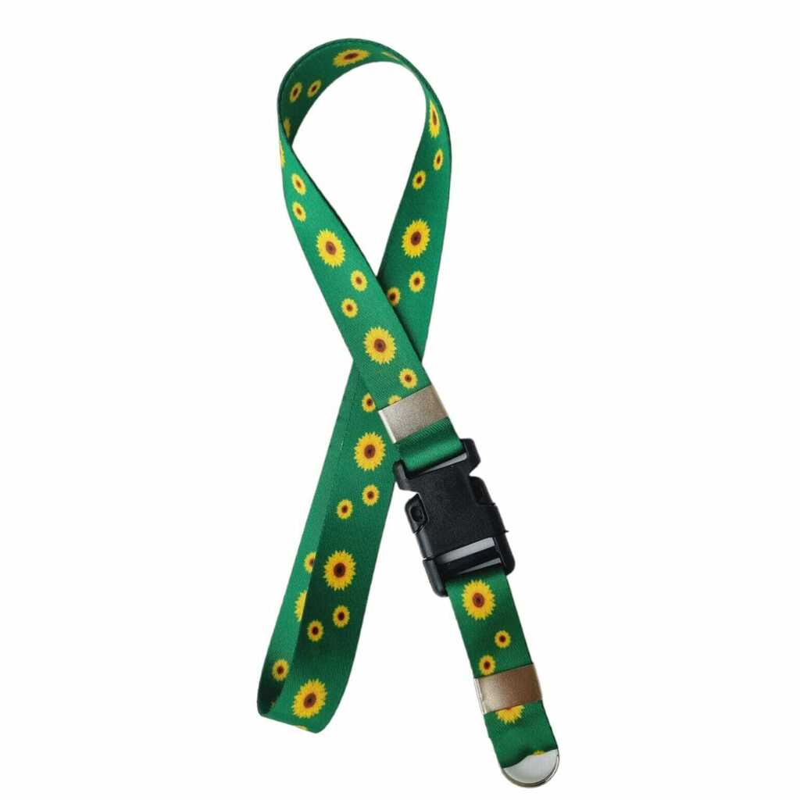

Sobre Deficiência Mental
A dificiência mental é uma condição que afeta o desenvolvimento cognitivo e intelectual da pessoa. Isso pode impactar áreas como o aprendizado, a memória, a resolução de problemas e as interações sociais. No entanto, com o apoio adequado e um ambiente inclusivo, as pessoas com deficiências mental pode alcançar grandes realizações e contribuir de maneira significativa para a sociedade.
O Cordão Girassol simboliza a conscientização sobre as deficiências, lembrando a todos da importância do respeito, da inclusão e do apoio. Todos têm algo valioso a oferecer. indepedentemente das dificuldades enfrentadas.